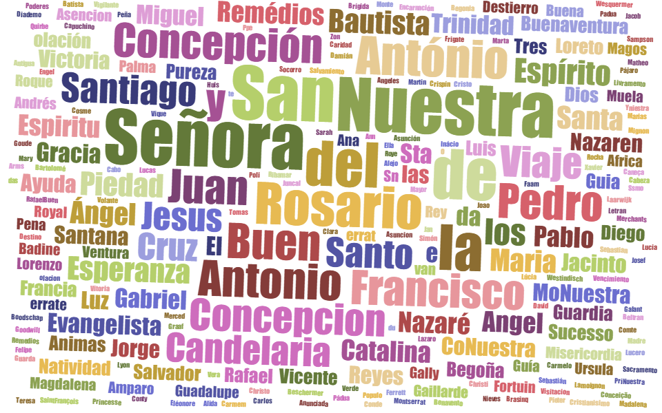

Análisis del registro histórico de viajes trasatlánticos dedicdos a la trata de esclavos que desembarcaron en Colombia entre los años 1549 y 1792
Haciendo uso de la base de datos del sitio slavevoyages.org, que pone a disposición los registros de viajes transatlánticos dedicados a la trata de esclavos, se hizo un filtro de aquellos viajes que en la variable de lugar de desembarco tenian como dato algún puerto de Colombia. En total se obtuvo el registro de 603 viajes que dan cuenta de un pequeño trozo de la historia en la que solo los puertos de Cartagena y Santa Marta están involucrados y de los cuales se desprende el siguiente análisis
Cantidad de esclavos trasladados por año:
Cantidad de esclavos desembarcados según la nacionalidad de la embarcación:
Nombres de Barco Registrados:
